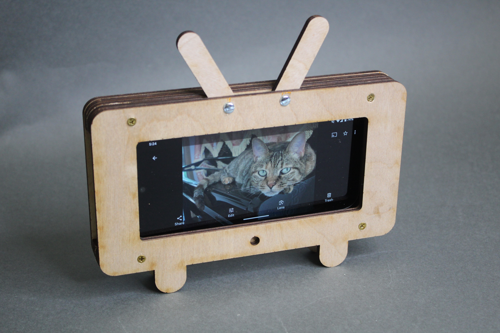

Total Time: 30 minutes
Quick Links
Lab 5: Let's Assemble a Phone Stand!
🦺 Introduction & Safety
(1-minute read)
Welcome to Lab 5! Today, we’ll learn how to assemble your laser-cut boards using handheld power tools. In this lab, you’ll build a phone stand designed to look like a mini TV with adjustable antennas. Through this hands-on activity, you’ll develop essential assembly skills and learn how to:
- ✅ Use a center punch to accurately mark holes
- ✅ Operate a power drill to create precise holes
- ✅ Use screws to fasten thicker components
- ✅ Assemble a hinge using nuts and bolts

🔨 Fabrication Quest of the Day
Today, you will create a TV shaped phone stand from the following:- (A) Laser-cut pieces of the phone stand
- (B) Power drill
- (C) Wood tape
- (D) Wood screws (x4)
- (E) Nuts and Bolts (x2)
- (F) Drill bit
- (G) Driver bits
Part 0: Plan Your Assembly
The diagram below illustrates the steps for assembling your phone stand.

Assembly Process
- Align the layers and hold them in place using wood tape.
- Drill holes for the screws and bolts at the marked positions.
- Secure the layers together with screws.
- Attach the adjustable antennas using nuts and bolts.
Part 1: Align Your Parts (5 minutes)
- Align and secure your parts with wood tape:
- To prevent the laser-cut parts from wobbling when you drill, first stich them together with wood tape.
- Center punch the holes:
- At each location where you'd like to drill a hole, use the center punch to create a divot for drill guidance.
Part (2): Drill A Pilot Hole
Now that we have taped our layers together, we can safely drill four pilot holes to prepare for the screwing process.
- Drill a Pilot Hole:
- Select the Line tool, but don’t click done or anywhere on the workspace yet.
- On the side panel, choose Construction Line. This type of line is not part of the model itself, it’s used purely for construction purposes.
Checkoff
Show your instructor that you have constructed a mirroring linePart (3): Drill in the Screws
Now that we have taped our layers together, we can safely drill four pilot holes to prepare for the screwing process.
- Drill a Pilot Hole:
- Select the Line tool, but don’t click done or anywhere on the workspace yet.
- On the side panel, choose Construction Line. This type of line is not part of the model itself, it’s used purely for construction purposes.
Checkoff
Show your instructor that you have constructed a mirroring linePart (4): Make a Hinge with Nuts and Bolts
Now that we have taped our layers together, we can safely drill four pilot holes to prepare for the screwing process.
- Drill a Pilot Hole:
- Select the Line tool, but don’t click done or anywhere on the workspace yet.
- On the side panel, choose Construction Line. This type of line is not part of the model itself, it’s used purely for construction purposes.